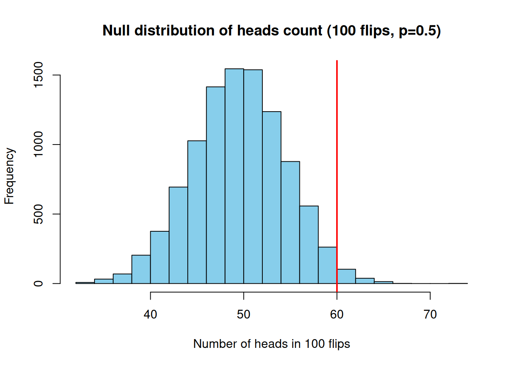

Permutation-Based FWER Correction, Part 2: Background pt 2
Statistics
Neuroscience
R
Author
Martin Sjogard
Published
July 19, 2024
The Null Distribution
Recall that the null hypothesis (\(H_0\)) is the assumption of “no effect” or “no difference.” The null distribution is the probability distribution of the test statistic under the assumption that \(H_0\) is true. In other words, it tells us how the test statistic would behave just by chance if the null hypothesis holds.
Formally, if \(T\) is our test statistic, the null distribution is the distribution of \(T\) under \(H_0\). For example:
In the coin flip example, our test statistic was the number of heads in 20 flips. Under \(H_0\) (fair coin), \(T \sim \text{Binomial}(20, 0.5)\). This binomial distribution is the null distribution of \(T\).
If we test for a difference in means between two large samples under \(H_0\) (no true difference), the null distribution of the standardized mean difference might be approximated by a \(t\)-distribution or normal distribution (depending on assumptions). For instance, in a two-sample t-test with equal variances, the null distribution of the t-statistic follows a \(t\) distribution with appropriate degrees of freedom.
If testing a correlation’s significance, under \(H_0\) (no real correlation), a suitable transform of the correlation coefficient might follow a known distribution (like a t distribution for Pearson correlation with a given sample size).
Why is the null distribution so important? Because it provides the reference frame for significance. We compare our observed test statistic to the null distribution to see how surprising the observation is under \(H_0\). This comparison is at the heart of calculating p-values and determining critical values.
Sometimes we can derive the null distribution analytically from probability theory (as with the binomial or t distributions above). However, in many cases the null distribution might be complicated or unknown. In those situations, we often resort to simulation or resampling techniques (like permutation tests) to empirically estimate the null distribution.
The Distribution Under \(H_0\) vs. Under \(H_1\)
It’s helpful to contrast the distribution of the test statistic assuming \(H_0\) with its distribution assuming a particular alternative \(H_1\). Under \(H_0\), we know (or estimate) the null distribution. Under \(H_1\), the test statistic would typically have a different distribution – often shifted or stretched relative to the null.
For example, consider testing if a coin is biased toward heads. Under \(H_0\) (fair coin), the number of heads in 100 flips follows a binomial distribution centered at 50. Under an \(H_1\) where the coin is actually biased (say \(p=0.6\) chance of heads), the distribution of heads count would center around 60. So under \(H_1\), “extreme” high values of heads (say 60 or more) are in fact likely, whereas under \(H_0\) they are unlikely. This situation is depicted conceptually as two overlapping distributions: one (null) centered at 50, and another (alternative) centered at 60. A threshold (critical value) set at, say, 58 heads might have a low probability under \(H_0\) (thus controlling Type I error) while capturing a lot of the \(H_1\) distribution’s mass (thus giving decent power).
Under \(H_0\): the statistic has some known distribution (e.g., centered at 50).
Under \(H_1\): the statistic’s distribution is shifted (e.g., centered at 60 if \(p=0.6\)).
The power of a test is the probability of correctly rejecting \(H_0\) when \(H_1\) is true – geometrically, it’s the area of the \(H_1\) distribution that falls beyond the critical value (in the rejection region). We choose our test/critical value to balance controlling Type I error (false positive rate under \(H_0\)) and maximizing power (true positive rate under \(H_1\)). While \(H_1\) can encompass many possible values (it’s often a range of scenarios), this framework helps explain why more extreme thresholds reduce false positives but also make it harder to detect real effects.
In practice, we usually focus on the null distribution for calculating p-values and setting up the test, since we assume \(H_0\) until evidence indicates otherwise. But it’s good to remember that if there is a real effect (\(H_1\) true), the test statistic is expected to deviate from the null distribution systematically.
Definition and Interpretation of the p-value
Now let’s formally define the p-value. Given an observed test statistic value (call it \(t_{\text{obs}}\)), the p-value is the probability of obtaining a test statistic as extreme as (or more extreme than) \(t_{\text{obs}}\)assuming\(H_0\) is true. In formula terms:
For a right-tailed test (where large values of \(T\) favor \(H_1\)):
\[
\text{p-value} = \Pr_{H_0}\left(T \geq t_{\text{obs}}\right),
\] the probability that \(T\) is greater than or equal to the observed value, under the null distribution.
For a left-tailed test (where small values favor \(H_1\)):
For a two-tailed test (where extreme in either direction counts):
\[
\text{p-value} = \Pr_{H_0}\left(\left|T\right| \geq t_{\text{obs}}\right),
\] ,i.e. the probability of \(T\) being as far or farther from the null hypothesis expectation as the observed, in either direction. This can often be computed as twice the one-tailed probability for the tail that \(t_{\text{obs}}\) lies in.
In less symbolic language: we locate our observed statistic on the null distribution and see what fraction (or area) of the null distribution lies at least as extreme. The more extreme \(t_{\text{obs}}\) is, the smaller this tail area will be, and thus the smaller the p-value. Interpreting the p-value: If the p-value is, say, 0.03, that means “if \(H_0\) were true, there is a 3% chance of seeing a result as extreme as this.” A small p-value indicates the observed data are unlikely under \(H_0\), which is why we reject \(H_0\) when p is below our α threshold. Note that unlikely under\(H_0\) does not automatically imply \(H_1\) is true – it simply raises skepticism about \(H_0\). (It could be a rare fluke, after all; in the long run, α proportion of true nulls will yield small p-values by chance.)
To reinforce proper understanding, remember: The p-value is computed under the assumption that \(H_0\) is true. . It is not \(P(H_0\text{ is true} \mid \text{data})\) and not \(P(H_1\text{ is true} \mid \text{data})\). It’s about the data’s compatibility with \(H_0\). A low p-value says “this data would be rare if \(H_0\) is true,” whereas a high p-value says “this data is quite normal if \(H_0\) is true.”
If p < α, we call the result statistically significant, and we reject\(H_0\). If p ≥ α, the result is not significant, and we do not reject\(H_0\).
For example, at α = 0.05:
p = 0.001 -> significant (strong evidence against \(H_0\)),
p = 0.04 -> significant (evidence against \(H_0\)),
p = 0.08 -> not significant (data are not sufficiently unusual under \(H_0\)).
One more point: When test statistics are continuous, if \(H_0\) is true and all assumptions hold, p-values are uniformly distributed between 0 and 1. This means that under \(H_0\), any p-value is equally likely. As a consequence, if \(H_0\) is true, the probability of p ≤ 0.05 is 0.05 (which aligns with our Type I error α). This uniformity is a mathematical fact that ensures our testing procedure is calibrated. If p-values weren’t uniform under \(H_0\), a threshold like 0.05 would not correspond exactly to a 5% false positive rate. (This holds for continuous distributions; for discrete cases like the binomial test, p-values have a discrete distribution but still will not be biased toward low values under \(H_0\).)
Critical Values and the Relationship to P-Values
There are two equivalent ways to conduct most hypothesis tests:
Critical value approach: Determine the cutoff value of the test statistic beyond which \(H_0\) will be rejected. This cutoff is chosen so that if \(H_0\) is true, the probability the test statistic falls beyond the cutoff is α. For instance, in a right-tailed test, the critical value \(c\) might be the 95th percentile of the null distribution (so \(P_{H_0}(T \ge c) = 0.05\)). We reject \(H_0\) if the observed \(T \ge c\).
P-value approach: Calculate the p-value for the observed test statistic. Reject \(H_0\) if p-value ≤ α.
These two approaches lead to the same conclusions. The critical value is essentially the boundary where p-value = α. For example, if the 95th percentile of the null distribution is \(c\), then observing \(T=c\) yields p-value = 0.05 (for a right-tailed test). Observing \(T > c\) yields p < 0.05, and \(T < c\) yields p > 0.05.
Example (critical value vs p-value): Suppose \(T \sim N(0,1)\) under \(H_0\) (a Z-test). For a two-tailed test at α = 0.05, the critical values are approximately ±1.96 (because 2.5% of the distribution is above 1.96 and 2.5% is below -1.96). So:
Critical region: reject \(H_0\) if \(T > 1.96\) or \(T < -1.96\).
If our observed \(T = 2.5\), this exceeds the critical value, so we reject. The p-value would be \(2 \times P(Z > 2.5)\) (two-tailed) which is about 0.0124, indeed ≤ 0.05.
If observed \(T = 1.0\), this does not exceed 1.96, so we fail to reject. The p-value would be \(2 \times P(Z > 1.0) ≈ 0.32\), which is > 0.05.
In summary, you can think of the p-value as the area in the tail beyond the observed statistic, and α as the area in the tail beyond the critical value. If the observed stat is past the critical value, the tail area beyond it (p-value) will be smaller than α.
Obtaining Null Distributions: Analytical vs Simulation
To calculate p-values or critical values, we often need the null distribution. There are two main ways to get it:
1.Analytical derivation (parametric approach): Using theoretical probability distributions and assumptions about the data (e.g., normality, independence), we derive the distribution of the test statistic under \(H_0\). Classic examples:
Use the Binomial\((n,p)\) distribution for count of successes under \(H_0\).
Use the \(t\) distribution for a t-statistic under \(H_0\) (when data are normal or \(n\) is large).
Use the \(F\) distribution for an ANOVA F-statistic under \(H_0\).
Use the \(\chi^2\) distribution for a chi-square statistic under \(H_0\).
These derivations come from probability theory and often involve assumptions (like the data following certain distributions, or large-sample approximations). When conditions are met, the analytical approach is very convenient and fast.
2. Simulation or resampling (nonparametric approach): When the null distribution is complex or unknown, we can simulate it. This could be:
Monte Carlo simulation: Generate many random datasets under \(H_0\) (using a known or estimated model) and compute the test statistic for each to see its empirical distribution.
Permutation (randomization) tests: If we have a real dataset, we can create new datasets that satisfy \(H_0\) by randomly shuffling or resampling the data. We then calculate the test statistic for each permuted dataset. The distribution of these statistics approximates the null distribution without relying on a formula.
Simulation methods are very useful if, for example, the theoretical null distribution is unknown or too hard to derive, or if we distrust the model assumptions required for the parametric approach. They are computationally heavier but increasingly feasible with modern computing. Permutation tests (a form of simulation) are particularly powerful for preserving the exact data characteristics while enforcing \(H_0\) – for instance, shuffling labels in a treatment vs control experiment breaks any real difference (satisfying \(H_0\)), but keeps the data values themselves intact. I will cover permutation tests in detail later in the series, as they form the basis of permutation-based FWER correction.
For now, I will illustrate obtaining a null distribution by simulation with a simple example in R.
Example: Generating a Null Distribution via Simulation (and Comparing to Theory)
Consider again the coin-flip scenario, but now with a larger number of flips to get a smoother distribution. Suppose \(H_0\): coin is fair (\(p=0.5\)), and we plan to flip \(n=100\) times. Our test statistic is the number of heads in 100 flips. We know analytically that under \(H_0\), \(T \sim \text{Binomial}(100, 0.5)\).
Let’s obtain the null distribution in two ways: (a) analytical formula, and (b) Monte Carlo simulation of many experiments. I will then use it to compute a p-value for a specific observed outcome (say we observed 60 heads out of 100).
set.seed(123)# Parametersn <-100# number of coin flipsp_null <-0.5# probability of heads under H0observed <-60# suppose this is the observed number of heads in the real experiment# (a) Analytical p-value calculation (one-tailed for illustration: H1 is bias toward heads)p_value_theory <-1-pbinom(observed -1, size = n, prob = p_null)p_value_theory # P(X >= 60) under Binomial(100, 0.5)
[1] 0.02844397
# (b) Simulation: generate many experiments under H0reps <-10000sim_counts <-rbinom(reps, size = n, prob = p_null) # simulate 10,000 experiments# Empirical p-value from simulation (fraction of experiments with >= 60 heads)p_value_sim <-mean(sim_counts >= observed)p_value_sim
[1] 0.0254
# Check that simulation p-value ~ theoretical p-valueabs(p_value_sim - p_value_theory)
[1] 0.003043967
# Visualize the null distribution from simulationhist(sim_counts, breaks =20, col ="skyblue", main ="Null distribution of heads count (100 flips, p=0.5)",xlab ="Number of heads in 100 flips")abline(v = observed, col ="red", lwd =2)

Let’s break down what I did:
I set observed <- 60 as an example outcome (60 heads out of 100 flips).
The theoretical one-tailed p-value (for the hypothesis of bias towards more heads) is computed as 1 - pbinom(59, 100, 0.5). This gives \(P(X \ge 60)\) for \(X \sim \text{Binomial}(100,0.5)\).
Finally, I plotted a histogram of the simulated null distribution and drew a red line at the observed value 60.
If you run this, you should see that p_value_theory and p_value_sim are very close (they’ll differ by a small random error on the order of \(10^{-3}\) or so). For instance, you might get something like p_value_theory ≈ 0.0284 and p_value_sim ≈ 0.0291 – these are essentially the same, confirming that our simulation is accurately capturing the binomial distribution.
Empirical null distribution of the test statistic (number of heads in 100 flips) under the \(H_0\) that the coins are exactly fair: The histogram shows the outcomes of 10,000 simulated fair coin experiments, each with 100 flips. The distribution is roughly bell-shaped, centered around near 50 heads. The red line marks the observed result (60 heads) from a single experiment. The p-value for the observation is the proportion of the null distribution that lies to the right of this red line (the shaded area beyond 60). In this example, the p-value is about 0.03, meaning there is a ~3% chance of seeing 60 or more heads if the coin is truly fair (or, more specifically, if the true expected value of the experiment is 50).
As expected, the null distribution is centered at 50 (when the coin is fair, on average half the flips are heads). Getting 60 heads is somewhat uncommon under \(H_0\) (only ~3% of random fair-coins flips achieved that or more in our simulation). If we were testing \(H_0\) at α = 0.05 with the alternative hypothesis “biased toward heads” (one-tailed), we would reject \(H_0\) since p ≈ 0.03 < 0.05. If our alternative was two-tailed (detecting any bias), we would consider both tails (≤40 heads or ≥60 heads) which roughly doubles the p-value to ~0.06; in that two-tailed case, 60 heads is actually borderline and would not be significant at the 0.05 level (because while 60 is unusual, so would an equally extreme deficit of heads – our observed outcome is only extreme on the high side).
This example illustrates how we use null distributions to obtain p-values, and how simulation can validate or substitute for analytical calculations. In more complex situations where we can’t write down a formula for the null distribution, we can rely on simulation or permutation to approximate it. The histogram also gives a visual intuition: most outcomes cluster around 50; 60 is out in the tail (hence p ~ 0.03 is the area of that tail).
The Role of Null Distributions in Multiple Comparisons
(A brief forward-looking note): When we perform multiple hypothesis tests (common in fields like neuroimaging, where we often test thousands of voxels for activation differences), the null distribution of the maximum test statistic or other aggregate becomes important for controlling the family-wise error rate. Permutation methods often involve simulating the null distribution for the entire set of tests by shuffling data labels, and then using the distribution’s quantiles to define corrected critical values that ensure the overall Type I error (FWER) is controlled. In later posts, we will see how the fundamentals from Part 1 and Part 2 come together to address those scenarios. Specifically, we will use permutation-generated null distributions to adjust for multiple comparisons (FWER), ensuring that the chance of any false positive across many tests stays at a desired level (like 5%).
Understanding null distributions and p-values is a critical step in that journey. You should now have a solid grasp of what p-values represent, how to obtain them, and how to interpret them in the context of hypothesis tests. In the next part of this series, I will delve into multiple testing and error rates (including FWER and the false discovery rate) and introduce permutation-based approaches to control these error rates. I’ll show how permutation tests can be applied in a neuroscience context (e.g. analyzing EEG or fMRI data) to make robust inferences while accounting for the multiplicity of comparisons.